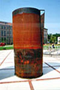

GANZ-sípok - Millenáris Park/ Budapest/


 |
 |
|
|  | ||
 |
||
GANZ-Sípok, avagy gondolatok a kortárs köztéri plasztika és az építészet kapcsolatáról. Van-e ma befogadó készség a letisztult, formai egyszerűségével ható köztéri plasztikára? Vajon milyen szobrászi megnyilvánulás jelent konzekvensebb, szervesebb kapcsolatot a mai építészet, tájtervezés és a köztéri szobrászat között? Vajon szabad-e önmagunknak szobrot, épületet, parkot állítani, vagy egy nagy egész összefüggő részeiként, egy urbánus land-art elemeiként értelmezve minden résztvevő a végső összhangzatnak alárendelve vegyen részt a komponálásban? Megengedhető-e, hogy a köztér a gátlástalan és tolakodó önérvényesítés, az alázatot nem ismerő formalista gegzuhatag terepe legyen? Összetéveszthető-e a gondolatiságával és megjelenési formájával is maradandóságra törekvés az "up-to-date" gyorsan megehető, de holnap már emészthetetlen, gondolati bázist nélkülöző, ipari-vásári ötlet- kínálat dömpingjével? Lehet-e rangja egy szalonképtelennek kikiáltott, ugyanakkor, buta módon csak az elmúlás szimbólumaként szóba kerülő, hihetetlenül élettel teli és a legbravúrosabb festői truvájokat is felülmúló színgazdagságú / a legmelegebb feketétől a bársonyos bordón át az élő narancsvörösig / rozsdás acél felületnek? Szabad-e a szobrászat eszköztárát bármivel is behatárolni? Jól teszi-e az építész, vagy tájtervező, ha a nagy "térplasztika" /a ház, a park./ alárendelt, kisebb, de igen fontos elemeit maga tervezi, vagy beismeri, hogy ez a lépték és téri viszonyulás talán egy szobrász beavatásával frissebb eredményt hozhat, mely végül az épülethez adhat értéket. A gyakran felmerülő, alárendelt funkciójú térelemek, úgy, mint klímák, mélygarázs szellőzők és társaik érdekes kihívások lehetnek a /funkcionális / térplasztikák avatott alkotói, lásd szobrászok számára. Talán megérné a társművészek beavatása, hogy tovább már ne sokasodjanak a csőszeletekből hegesztett hajókürtök, és fémszerkezetű üveg piramisok. A Millenáris Park tervezésében jómagam, monumentális üvegplasztikák tervezésére voltam "hivatva", melyek egyfajta filmszerű, virtuális látványsor nézői létrehozására épültek a minimál-art eszköztelenségével. /CORTEN-steel és síküveg/. E tervek nem valósulhattak meg, mert a kortárs képzőművészet megjelenésénél sokkal fontosabb szempontok és erők így döntöttek. Ma a formalista, egypoénos gegek világában még mindig nincs helye a hosszabb távon értéket hordozó, időtálló munkáknak. De visszatérve az eredeti témánkhoz veszélyben éreztem egy park és építészeti együttes összhangjának kialakulását, a mélygarázs szellőzőnél felmerült tervezői ötleteket hallva. Így kidolgoztam, Benczúr László építész buzdítására egy talán kellően nagyvonalú és nagy méretű, megdöntött térbeli üvegparalelogramma térplasztikát. Ez a 4 db. 1,5 m átmérőjű 10 m hosszban elfekvő beton lyukat egy egységbe fogta volna és különös fénytöréseivel, tükröződéseivel kapcsolódott volna a parkhoz, illetve az épített környezethez. / Ennek sokkal kisebb és fémszerkezettel túltagolt változatával találkoztam néhány hónappal későbbi, személyes látogatásomkor a berlini Potzdamer platzon megépített, nagyon izgalmas építészeti és tájtervezői környezetben. /Sony Centrum; Helmut Jahn/, ahol nem találtam határvonalat az építész és a tájtervezői munka gondolatiságában illetve megvalósulásában. Miután a fenti ötlet is megbukott, /kisszerű indokok mentén/, javasoltam egy emberléptékű, a környezeten uralkodni nem kívánó, de mégis hangsúlyos térplasztika létrehozását. Ez formai kezelésmódjában leginkább a növények levél és szárkapcsolatának szerves összefüggéseire emlékeztet. Ugyanakkor gondolatiságában az ipari megmunkálás során hirtelen félbehagyott, megdermedt fémmegmunkálási állapot talán a "letűntetett" ipari múltra is utalni tud, a plasztika együttes sajátos ritmusát is érzékelve. A szobor egyes elemeinek mérete 3 és 4 méter között váltakozva ad egy sajátos, finom ritmust, ahogy egy csoportba verődött társaság figurái viszonyulnak egymáshoz. Az acél kezelés módja nélkülöz minden mesterséges, szépelgően esztétizáló allűrt. Az ipari esztétika keresetlen értékeit alkalmazza, használva azt az esendőséget mely a munkás kezének megállásából keletkező, érzékeny grafikus vonalra emlékeztető eredményt láttat. A henger palást felhasításai nem megerőszakolni kívánták a szabályos forgástestet, hanem annak alárendelve, belesimulni, illetve abból szervesen kiszakadni. A ferde vonal mentén elhasított palást darab a hengerléskor az anyagba került feszültségnek okán gyönyörűen kinyílik, mintegy elhagyja az anyatestet. Ez a felület ily módon felszabadulva finom táncba kezd egy közepes erejű szélben. A függőlegesen felhasított palást-rés leginkább a fegyver irányzék érzékeny gesztusát idézi, a kihasított anyag megmaradva áthajol a szemben lévő réshez. A másik függőleges kihasítás is az eredeti gyártási állapot elhagyásával válik feszültség teremtő plasztikai elemmé. Ezeknek az eszközöknek a tisztasága és szobrászi izgalma érdekelt, amikor "mélygarázs szellőzőt" terveztem. A korrodált acélcsövek belső éleihez rejtett reflektorok elhelyezését gondoltam, melyek a felhasításokon át a világos színű térburkolatra,- mint vetítő vászonra - különös, geometrikus fény-árnyék grafikát vetíthetnének. Ezt a grafikát modellkísérlet segítségével bemutattam. A hatás nem maradt el, elvetették. Ma ez az esti látványból valóban hiányzik. A saját árnyék-grafikáján álló acél térplasztika önálló látványeleme lehetne a parknak. A kiválasztott anyag /CORTEN-steel/ a nemzetközi képzőművészetben régóta használatos. Csak a felső néhány mikron vastagságú réteg korrodálódik. A rozsdásodás, mint folyamat ad állandóan változó, élő látványt. Mint funkcionális szobornak, műszaki követelményeknek is eleget kellett tennie. Kiváló összhangban a statikus és gépésztervezőkkel kialakítottuk a szoborba rejtett csapadék elvezető rendszert. Mindent összevetve nagy élmény volt, profi gyári körülmények között /lelkes munkásokkal/, monumentális méretben, Buda szívében egy kortárs plasztikát létrehozni. Köszönet az ügy értő támogatóinak. 2002.03.12 |
||